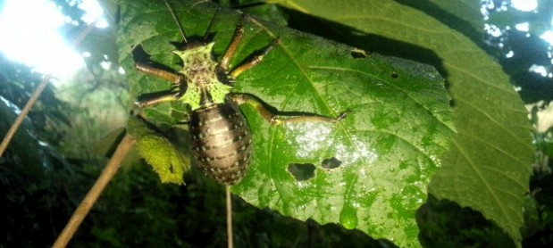

A descoberta de uma nova espécie de inseto na comunidade de Nensa, no distrito de Marromeu, é um marco significativo para a ciência e a conservação da biodiversidade. Esses avanços destacam o potencial da região para revelar segredos ainda desconhecidos da natureza.
A Oficina dos Biólogos
A Associação Amigos da Natureza e Vidas, através do seu programa "A Oficina dos Biólogos", realiza uma iniciativa local para capacitar jovens com conhecimento técnico e científico sobre biodiversidade, especialmente na rica região de Marromeu, Nensa.
Homenagem a Ricardo Guto
Em homenagem a Ricardo Guto, está sendo construído um laboratório tradicional em uma floresta intacta. Este laboratório celebra seu legado e destaca seu impacto na ciência moçambicana, sendo reconhecido como o "neto de Charles Darwin do século XXI".
O trabalho de Ricardo Guto foi excecional, com descobertas espalhadas por instituições como o Parque Nacional da Gorongosa, o Museu de História Natural de Maputo, a Universidade Lúrio e a Universidade de Cape Town. Isso reflete a importância de sua contribuição científica.
Além de preservar a memória de um cientista brilhante, o laboratório representa esperança e incentiva jovens da comunidade a seguir seus passos na exploração da biodiversidade de Moçambique. É um passo importante para integrar ciência, educação e conservação de forma sustentável.
Laboratório de Biodiversidade Ricardo Guta
O Laboratório de Biodiversidade Ricardo Guta tem um impacto inspirador na capacitação de jovens cientistas em áreas como Micologia, Botânica, Mastozoologia, Herpetologia, Entomologia e Ictiologia.
Sob a liderança de Tongai Castigo, o programa contribui para a conservação da biodiversidade, mesmo com recursos limitados.
Descobertas e Biodiversidade
A descoberta de novas espécies, incluindo insetos, plantas e cogumelos raros, como *Strychnos sp.*, destaca a importância do trabalho para a ciência e a preservação de ecossistemas únicos.
O registro de espécies como o grilo-do-mato do gênero *Enyaliopsis ssp*, com seu mecanismo de defesa, ilustra como o estudo da biodiversidade revela comportamentos extraordinários na natureza.
Impacto e Potencial
É inspirador refletir sobre o papel dos jovens cientistas de Marromeu e o impacto de suas iniciativas na exploração científica e preservação ambiental, beneficiando Moçambique e o avanço global do conhecimento.
A riqueza de biodiversidade no distrito de Marromeu, com suas florestas e a influência do rio Zambeze, destaca o potencial da região para novas descobertas ecológicas e científicas.
A formação desses cientistas locais é vital para a sustentabilidade e a proteção dos recursos naturais da área. Eles trazem inovação e a esperança de transformar Marromeu em um centro de pesquisa e preservação ambiental.
Seja pela catalogação de espécies, estudos do ecossistema ou conscientização ambiental, esses esforços têm o poder de criar um legado duradouro.
Participe
Como você imagina que essas iniciativas podem ser ampliadas para envolver mais jovens e comunidades?
Contacto
Estamos em contacto por número chamadas e WhatsApp: 871765055
Email: tongaicastigo@gmail.com